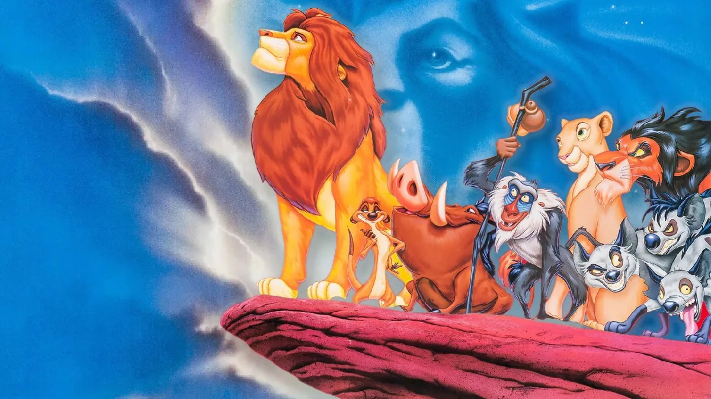

Welcome to the World of The Lion King
"The Lion King" is a beloved animated film produced by Walt Disney Feature Animation, released in 1994. Set against the breathtaking backdrop of the African savanna, the story follows the journey of Simba, a young lion who must navigate the challenges of growing up, facing loss, and ultimately embracing his destiny as king. From the moment he is presented to the animal kingdom by his father, King Mufasa, Simba is thrust into a world filled with expectations and responsibilities. As he learns about the Circle of Life, he grapples with the weight of his future while yearning for adventure. However, tragedy strikes when Mufasa is betrayed and killed by his envious brother Scar, leading Simba to flee in fear and guilt.Throughout his journey, Simba encounters a diverse cast of characters, including the carefree duo Timon and Pumbaa, who introduce him to a life of leisure. As he grows, he must confront his past and the lessons of leadership imparted by his father. The film beautifully weaves themes of loss, redemption, and the importance of accepting one's identity, culminating in a powerful climax that sees Simba reclaim his rightful place in the Circle of Life.
Plot Summary
The film begins with the birth of Simba, the son of King Mufasa and Queen Sarabi, celebrated by the animal kingdom in the Pride Lands. Mufasa takes pride in teaching Simba about the Circle of Life, instilling in him the values of leadership and responsibility. However, lurking in the shadows is Simba's uncle, Scar, who harbors deep jealousy towards Mufasa and covets the throne for himself.Scar devises a sinister plan to usurp Mufasa's position. He orchestrates a stampede, manipulating Simba into a dangerous situation that leads to Mufasa's tragic death while saving his son. Overcome with guilt and believing he is responsible for his father's demise, Simba flees the Pride Lands, leaving Scar to claim the throne.In exile, Simba encounters Timon and Pumbaa, a meerkat and warthog duo who teach him to live a carefree lifestyle under the mantra "Hakuna Matata." As he grows up away from his past, Simba struggles with his identity but finds joy in his new life.Years later, Nala, Simba's childhood friend, stumbles upon him while searching for help to save the Pride Lands from Scar's tyrannical rule. With the guidance of the wise mandrill Rafiki and the memories of his father, Simba confronts his fears and ultimately returns to reclaim his rightful place as king. In a climactic battle, Simba faces Scar, uncovers the truth about his father's death, and embraces his destiny, restoring balance to the Circle of Life.

Main Characters
- Simba: The film's protagonist, Simba starts as a curious and adventurous cub, eager to learn from his father, Mufasa. After experiencing profound loss and guilt, he grows into a young adult living a carefree life away from his responsibilities. Throughout his journey, Simba learns the importance of facing one’s past and embracing his identity as the rightful king of the Pride Lands.
- Mufasa: The wise and noble king of the Pride Lands, Mufasa serves as a mentor and father figure to Simba. He embodies strength, honor, and compassion, teaching Simba about the Circle of Life and the responsibilities that come with leadership. Mufasa's tragic death serves as a pivotal moment in the story, significantly impacting Simba's growth and development.
- Scar: The primary antagonist, Scar is Mufasa’s younger brother, whose deep-seated jealousy and ambition drive the conflict in the story. Manipulative and cunning, he seeks to overthrow Mufasa and take the throne for himself. Scar’s treachery not only leads to Mufasa’s demise but also sets Simba on a path of exile and self-discovery.
- Nala: Simba's childhood friend and eventual love interest, Nala is a strong and independent lioness who plays a crucial role in the story. She seeks Simba's help in saving the Pride Lands from Scar's tyranny, encouraging him to confront his past and embrace his destiny. Nala's bravery and loyalty inspire Simba to reclaim his rightful place as king.
- Timon and Pumbaa: A comedic duo, Timon and Pumbaa befriend Simba during his exile and introduce him to a carefree lifestyle. Timon, a meerkat, and Pumbaa, a warthog, teach Simba the philosophy of "Hakuna Matata," meaning "no worries." Their friendship provides Simba with a sense of belonging and joy, allowing him to find peace away from his past.